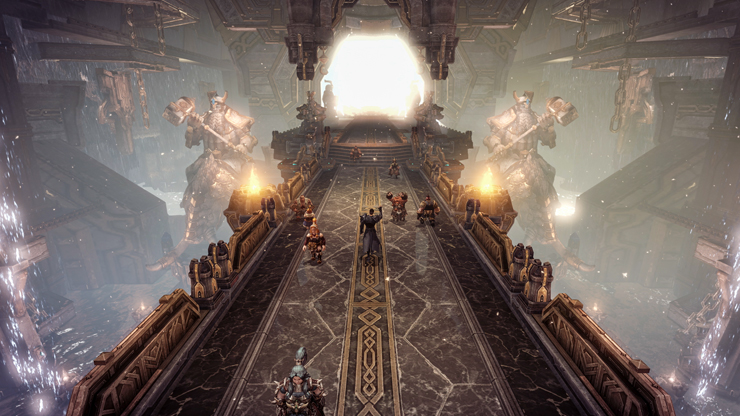
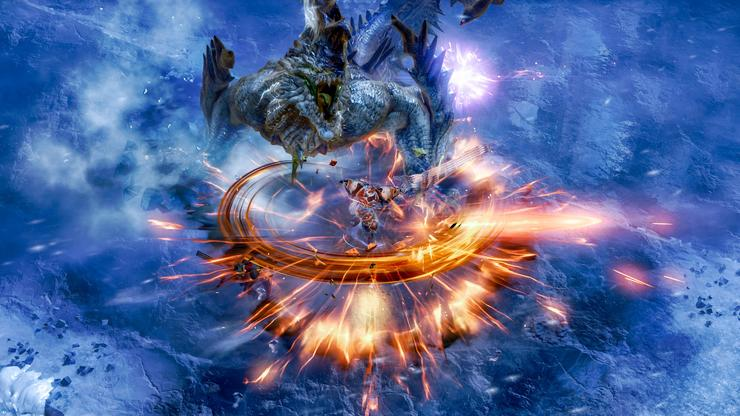
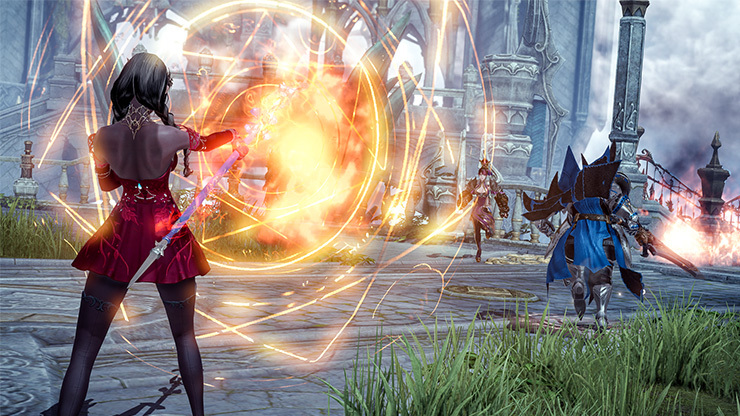
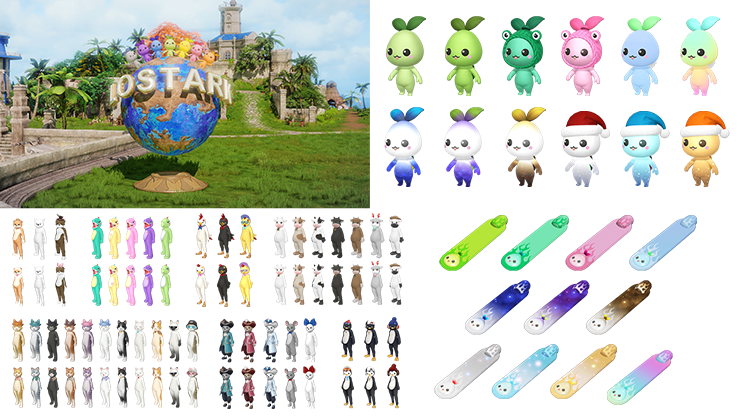

|  |
Anh hùng của Arkesia, Trong bức thư chúng tôi đã phát hành với Smilegate RPG vào tuần trước, chúng tôi đã thông báo một số điều chỉnh sắp tới đối với việc mài giũa tài liệu, các sự kiện mới và sự khởi đầu của Competitive Proving Grounds Phần 1. Tất cả đều có trong bản cập nhật của tuần này, phát hành vào ngày 24 tháng 3! Thời gian ngừng hoạt động sẽ bắt đầu lúc 12 giờ sáng theo giờ Thái Bình Dương (7 giờ sáng UTC) vào ngày 24 tháng 3, với thời gian ngừng hoạt động dự kiến là 8 giờ. Dưới đây, bạn có thể tìm thấy danh sách tất cả các bản cập nhật và bản sửa lỗi có trong bản cập nhật này. |
SPOTLIGHT CASUAL GUARDIAN RAID EVENT Thưởng thức Guardian Raids một cách bình thường hơn! Thư giãn, vui chơi và nhận phần thưởng rèn luyện. ‘Scale of Balance’ được áp dụng để thay đổi chỉ số của nhân vật để phù hợp với cấp độ của Người giám hộ, và độ khó được điều chỉnh tùy theo số lượng người tham gia cuộc đột kích. Người chơi sẽ có thể thách thức Helgaia, Frost Helgaia, Lumerus, Ur’Nil, Vertus, Chromanium, Nacrasena, Dark Legoros, Icy Legoros, Calventus và Levanos! Sự kiện này sẽ kéo dài trong khoảng một tháng và người chơi có vật phẩm cấp 250 trở lên sẽ có thể tham gia. Tương tự như Grand Prix, bạn có thể tham gia mỗi ngày một lần và kiếm tiền xu dành cho sự kiện cụ thể để chi tiêu cho phần thưởng tại một nhà cung cấp mới. Hoàn thành Đột kích trong tuần sẽ nhận được 200 xu và chiến thắng cuối tuần sẽ nhận được 300 xu. Nhà cung cấp này có thể được tìm thấy ở các thành phố lớn bên cạnh lối vào hoạt động mới này và sẽ có đầy đủ các rương nguyên liệu mài giũa Cấp 1, 2 và 3, Sách Luyện kim & May vá (dùng để tăng tỷ lệ mài giũa) và Rương Đá quý T3 - có sẵn để được ghi lại hàng tuần cho đến khi sự kiện kết thúc. |
COMPETITIVE PROVING GROUNDS SEASON 1 Khu chứng minh cạnh tranh Phần 1 sẽ bắt đầu sau thời gian ngừng hoạt động ngày 24 tháng 3 cho bản cập nhật hàng tuần. Người chơi sẽ có thể xếp hàng solo cho chế độ 'Team Deathmatch', chiến đấu với nhau để giành lấy uy tín và phần thưởng. Khi bạn thắng hoặc thua các trận đấu Cạnh tranh trong suốt mùa giải, bạn có thể theo dõi 'Điểm trung bình trận đấu cạnh tranh' của mình. Thứ hạng của bạn được xác định bởi điểm số của bạn, cũng như phần thưởng bạn nhận được khi mùa giải kết thúc. Nếu bạn muốn biết thêm thông tin chi tiết trước khi cập nhật, vui lòng truy cập bài viết Phần 1 cạnh tranh của chúng tôi. |
PLAYER GIFTS Như đã đề cập trong lá thư từ Amazon Games & Smilegate RPG vào tuần trước, người hâm mộ Lost Ark trên toàn thế giới đang ăn mừng tất cả những người chơi mới hiện đang tận hưởng trò chơi mà họ yêu thích. Người chơi ở Hàn Quốc đã nhận được những món quà để kỷ niệm sự ra mắt của trò chơi ở phương Tây và chúng tôi muốn tất cả mọi người đều có mặt. Chúng tôi rất biết ơn tất cả các bạn, những người đã cùng chúng tôi bắt đầu cuộc phiêu lưu này và chúng tôi rất vui mừng về tương lai dài phía trước! Để giúp bạn trong cuộc hành trình này với chúng tôi, hãy tận hưởng một món quà đầy thú vị là mỹ phẩm và tài liệu hữu ích. Quà bao gồm:
Những quà tặng này sẽ hiển thị trong Kho sản phẩm của bạn sau khi cập nhật hàng tuần! Những người chơi tham gia với chúng tôi trong tương lai gần cũng sẽ được cấp những quà tặng này trong lần đăng nhập đầu tiên của họ và chúng tôi sẽ thông báo ngày kết thúc khi ngày bắt đầu đến gần. Cảm ơn một lần nữa vì đã cùng chúng tôi bắt đầu cuộc phiêu lưu này. |